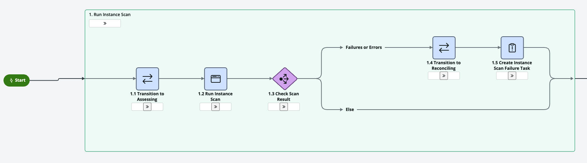
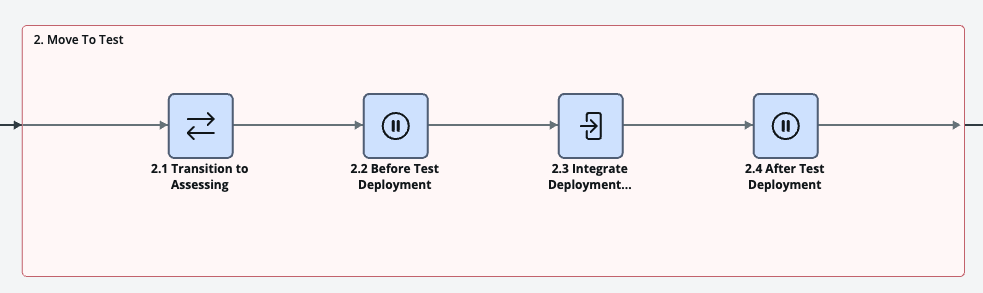
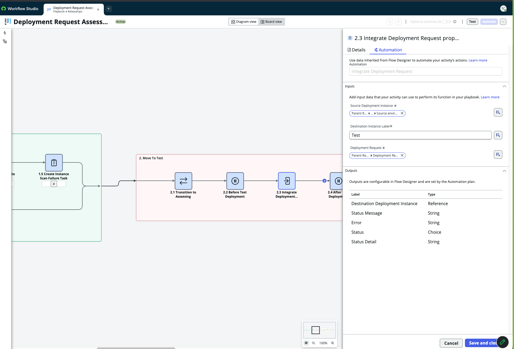
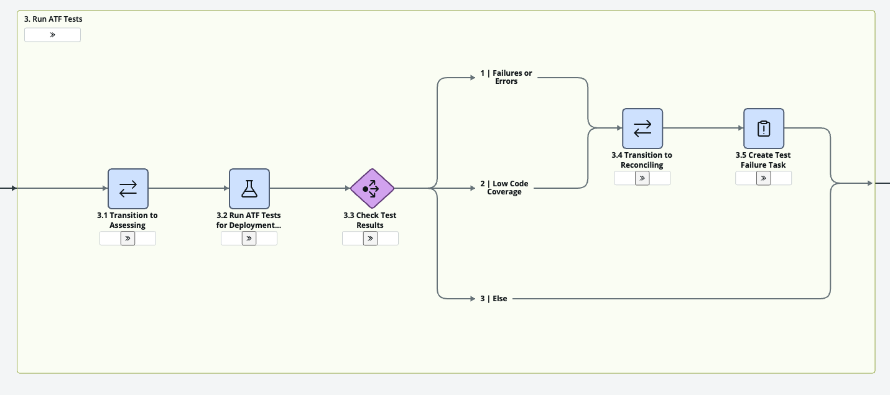
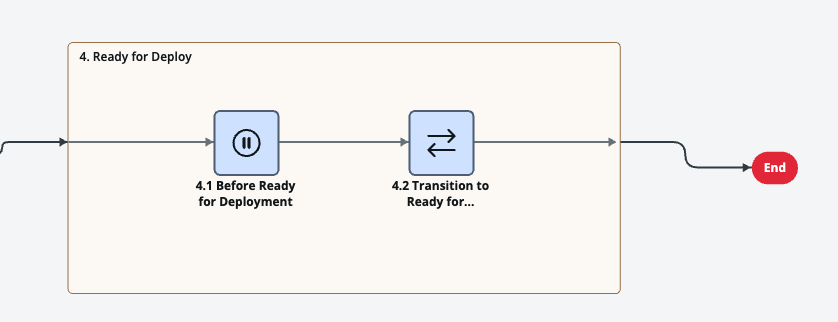

ReleaseOps
Deployment Request ディープダイブ
参考デッキ — メインのワークショップからリンクされていますが、コアデイの内容には含まれません
アーキテクチャ
ソースコントロールから Deployment Request まで
「ReleaseOps はソースコントロールに直接接続しません — アプリリポジトリの内容を Update Set に圧縮し、それをデプロイのペイロードとして使います。」
🗂️ ソースコントロール 複数のサンドボックスで同時に複数バージョン
→
📦 App Repo Studio での公開でどこにでもインストール可能に
→
→
🚚 Deployment Request ReleaseOps が実際に移動させるもの
アーキテクチャ
2つのコアフロー、1つのパイプライン
Assessment flow
単一の Deployment Request を検証します: Instance Scan → Move to Test → Run ATF → Ready for Deploy。DR ごとに、実行を指示したときに動きます。
Release flow
リリース日になると、Ready for Deployment に到達したすべての Deployment Request が、まとめて最終的な宛先にプッシュされます。
アーキテクチャ
Freeze date と release date
Freeze date
Ready for Deployment に到達するための締切です。過ぎてしまうと、Deployment Request はdeferred （保留）とマークされます — ブロックされるわけではありません。（Robert が本来使いたかった呼び方: cutoff date。）
Release date
deferred でないすべての Deployment Request に対して、実際に本番へのバッチプッシュが発火するタイミングです。
Deferred は true/false のフラグであり、state（状態）ではありません — deferred になった DR も、後でアセスメントに合格すれば、同じパイプラインを通じて別のリリースに乗ることができます。
アーキテクチャ
なぜ dev → test だけ ではうまくいかないのか
アセスメントフローは、すでにアプリを dev から test に移動させます。test が「最終的な宛先」でもある場合、リリースフローにはペイロードを新たにプッシュする先がありません — すでにそこにあるので、リリースは失敗します。
ReleaseOps には少なくとも3つのインスタンスが必要です: dev、アセスメント対象（test、staging、UAT のいずれか）、そして最終的な宛先（例: prod）。
アーキテクチャ
アセスメントのプレイブックをステージごとに
🔍 Instance Scan dev インスタンス上での静的ポリシーチェック
→
→
→
1️⃣ Instance Scan が失敗すると、タスクが作成され、DR は静かに停止するのではなく Reconciling に移動します。 2️⃣ Move to Test の宛先は設定可能 です — staging、UAT、または任意の sub-prod インスタンスであり、文字通り「test」である必要はありません。 3️⃣ Run ATF はコードカバレッジとテスト失敗を、それぞれ別の sad-path 終了としてチェックします。 4️⃣ Ready for Deploy はアセスメント のゴールです — 本番への到達はリリースフローの仕事です。
アーキテクチャ
Pause point — 導入の最大の障壁
どの顧客にも、change control の承認、担当者の承認、hypercare の準備など、自動化されたステージの間に発生する手作業のステップがあります。Pause point は、ReleaseOps がそれに対応する仕組みです。
⏸️ Pause point は条件付きの待機 です: そのステージで手動定義された Deployment Request Task を確認し、存在しなければ自動的に続行します。 📋 Deployment Request Task は追跡可能で割り当て可能なレコードです — 口頭の約束ではありません — これが監査可能性にとって重要です。 🔀 タスクの Pipeline フィールドは、アセスメントステージでの中断（「デプロイの準備はできているか？」）とリリースステージでの中断（デプロイ後のスモークテスト、サインオフ）を区別します。 🏷️ タスクの種類: Runbook 、Test issue、Scan issue、Preview issue。
ウォークスルー
Studio から本番環境まで、ステップバイステップ
1️⃣ IDE からアプリをビルドしてインストールする 2️⃣ アプリを App Repository に公開する 3️⃣ 公開によって作成された Update Set を見つける 4️⃣ 宛先インスタンスに Release レコードを作成する 5️⃣ Update Set をプロモートして Deployment Request を作成する 6️⃣ Release をアクティブ化する 7️⃣ Deployment Request を「Ready to Assess」にマークして、プレイブックの実行を見守る 8️⃣ Deployment Request Task で手動の pause point を設定する
ウォークスルー — ステップ1
IDE からアプリをビルド＆インストール
インスタンスにインストールされていないアプリは Studio から見えません — ビルドとインストールがまず IDE から行われ、Studio が登場するのはその後です。
🛠️ IDE でアプリをビルドします — 今日のビルド演習と同じ Fluent SDK のワークフローです。 📥 now-sdk build、続けて now-sdk install — dev インスタンスにインストールします。🔎 インストール後にのみ、アプリが Studio の Explorer パネルに表示されます — このウォークスルーはそこから続きます。
このウォークスルーは STUDIO から公開します — IDE と STUDIO のどちらを使うかという未解決の問題は「RELEASEOPS にまだできないこと」を参照してください
ウォークスルー — ステップ2
アプリを App Repository に公開する
1️⃣ Explorer パネルから ServiceNow Studio でアプリを開きます。 2️⃣ App Details → Publish。バージョンを上げます — Studio が自動的にインクリメントしてくれます。 3️⃣ 公開成功 — アプリは会社内の他のすべてのインスタンスから見えるようになります。
このステップのフルスクリーンショットは RELEASEOPS の演習にあります
ウォークスルー — ステップ3
公開によって作成された Update Set を見つける
1️⃣ dev インスタンスで Local Update Sets を検索します。 2️⃣ 公開アクションによって自動的に作成されました — 「Maintenance install version 1.0.1…」。 3️⃣ それを開きます — これが Deployment Request が実際に移動させるペイロードです。
落とし穴: スコープ付きアプリには、これとは別に「[app] in progress」というデフォルトの Update Set も常に開いた状態で存在します — これは標準の動作であり、エラーではありません。デフォルトのものではなく、この maintenance/install version のものを使ってください。
ウォークスルー — ステップ4
Release レコードを作成する — 基本編
1️⃣ 宛先インスタンスで Releases（ReleaseOps アプリ）を検索します。 2️⃣ 新しい Release レコード — 空の状態、state は Draft。 3️⃣ Destination environment: ReleaseOps が最終的にデプロイする先のインスタンス（ここでは prod）。
ウォークスルー — ステップ4
Release レコードを作成する — パイプラインとタイミング編
1️⃣ Pipeline: Sample Release Pipeline（リリース日を待つ）か Sample On Demand Pipeline（DR の準備ができたらすぐにプッシュする）。 2️⃣ Freeze date と release date — ライブデモではここでは近接させていますが、通常は数日〜数週間の間隔を空けます。 3️⃣ 保存します。Assignment group は App Engine Admins に設定。アクティブ化されるまで state は Draft のままです。
ウォークスルー — ステップ5
Update Set をプロモート → Deployment Request を作成
1️⃣ dev に戻り、update set を開いて Promote Update Set をクリックします。 2️⃣ 宛先インスタンス上でレコードプロデューサーが開きます — 「Deploy an Update Set」。 3️⃣ 「Create new deployment request」をチェックし、先ほど作成した Release を紐づけ、必要に応じて実行する ATF suite を絞り込みます。
ウォークスルー — ステップ6
Release をアクティブ化する
1️⃣ Release が Active にならない限り、Deployment Request は Ready to Assess に進めません。 2️⃣ Release レコードに戻り、Activate Release をクリックします。 3️⃣ State: Active。ReleaseOps が裏側で freeze-date のジョブをスケジュールしました。
ウォークスルー — ステップ7
Ready to Assess → 動き出すのを見守る
1️⃣ Deployment Request で Ready to Assess をクリックします — これが実際にアセスメントのプレイブックを起動させるものです。 2️⃣ State が自動的に Assessing に切り替わります — 別途の承認ステップはありません。 3️⃣ アクティビティログがリアルタイムで様子を伝えます: instance scan が0件の findings で完了し、続いて「Started moving updates to…」。
ウォークスルー — ステップ7（続き）
Workflow Studio の中へ: プレイブックを見つける
1️⃣ 「Studio」を検索 → Workflow Studio。 2️⃣ Playbooks を ReleaseOps アプリケーションで絞り込みます — Deployment Request Assessment を含め、標準で4つ用意されています。 3️⃣ 開きます。左から右に4つの番号付きステージ: Run Instance Scan → Move To Test → Run ATF Tests → Ready for Deploy — 次に見ていきます。
Playbook — ステージ1
Instance Scan

dev インスタンス上での静的ポリシーチェックです。ハッピーパスは Move to Test に続き、Failures or Errors は代わりに Reconciling タスクに分岐します。
Playbook — ステージ2
Move to Test


「Test」はラベルであり、ハードコードされたインスタンスではありません — Integrate Deployment Request アクティビティは、宛先を設定可能な入力として受け取ります。ここでは文字通り「Test」と名付けられていますが、同じように Staging や UAT にもできます。
Playbook — ステージ3
Run ATF Tests

2つの独立した sad path があります: Failures or Errors と Low Code Coverage — どちらも、静かにブロックするのではなく Reconciling タスクにルーティングされます。
Playbook — ステージ4
Ready for Deploy

アセスメント フローのゴールです。ここから本番に Deployment Request を到達させるのは、リリースフローの仕事であり、それ自身のスケジュールで行われます。
ウォークスルー — ステップ8
手動の pause point を設定する
1️⃣ Deployment Request → Deployment Request Tasks。誰かが追加するまでは空です。 2️⃣ 新しいタスク — Type は Runbook、Test issue、Scan issue、Preview issue のいずれかです。
ウォークスルー — ステップ8（続き）
一時停止させ、解決する
1️⃣ このタスクは Playbook stage「Ready for Deploy」に紐づけられ、activity「Before Ready for Deployment」を待っています — タスクが閉じるまで、プレイブックはその先に進みません。 2️⃣ Resolve でクリアすると、プレイブックは再開します — サインオフが「デプロイの準備はできているか？」であっても、デプロイ後のスモークテストであっても、仕組みは同じです。
ステップ2〜8のフルスクリーンショットは RELEASEOPS の演習にあります — クロージングスライドのリンクを参照してください
ロードマップ
ReleaseOps にまだできないこと
prod からの ATF suite 選択
新規アプリの場合、その ATF suite はアプリの中にあり、prod にはまだ存在しません — そのため、そこにある Deployment Request フォームからは選択できません。優先度の高いロードマップ項目です。
Fixed script とデータロード
顧客の約80%が、update set → fixed script → update set のインターリービングを求めます。Pause point は手作業のステップを追跡可能なタスクでラップできますが、ReleaseOps 自体はそのインターリービングを自動化しません。
IDE 対 Studio での公開
このウォークスルーは Studio から公開していますが、これまでのブートキャンプの資料は IDE のみを扱っていました。App Repo への公開が IDE から直接可能かどうかは、まだ未解決の質問です。
長期的な方向性: 顧客をソースコントロールを正式な起点とする方向へ導き、複数の interleaved な update set の代わりに、1つの統合されたパッケージが本番に届くようにします。
まとめ
本番 にデプロイ完了最初から最後まで: オフインスタンスでビルドされたアプリが App Repo に公開され、Deployment Request にプロモートされ、自動的にアセスメントされ、本番にリリースされました — チームが望んだ場所にだけ人によるサインオフがあり、あらゆる場所にあるわけではありません。
🧱 プラットフォームが昔からずっと使ってきた同じ Update Set のペイロード — 今では runbook ではなく playbook が動かしています。 ⏸️ Pause point があるということは、「自動」が「誰もサインオフしない」ことを意味するわけではありません — サインオフが Slack のスレッドではなく、追跡可能なタスクになるということです。 🚀 リリースフローは、準備が整ったすべての Deployment Request に対して、スケジュールどおり、無人で発火しました。
ありがとうございました
ワークショップ に戻るこれでパイプライン全体です — アーキテクチャ、アセスメントのプレイブック、そして pause point の仕組み。メインデッキに戻るか、ハンズオンの演習に進んでください。